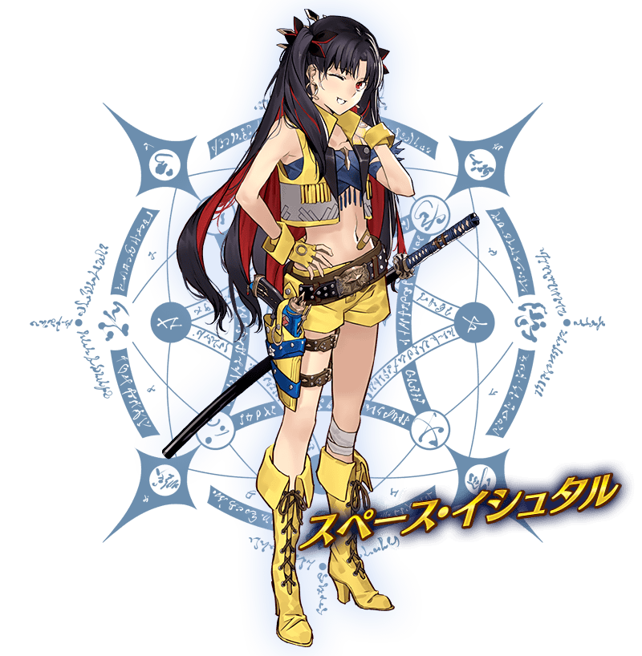
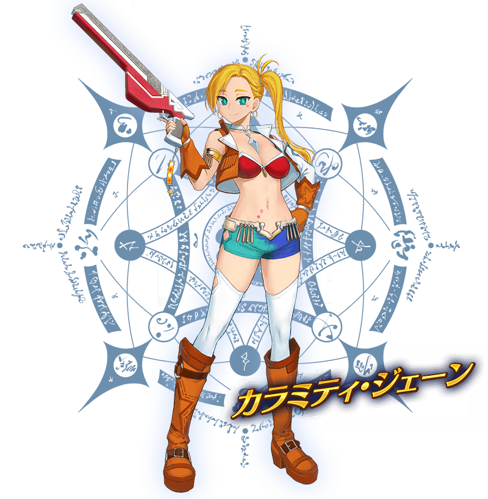

預定舉辦期間限定活動「Saber Wars２ ～邁向初始的宇宙～」！
在從者生活的宇宙“從者・宇宙”，奔走各個行星展開戰鬥！
本活動中將巡迴多顆行星，收集資源以進行故事。
向“從者・宇宙”存在的星星冒險、見識故事的收尾吧！
※本頁面皆為開發中圖片。會有與實際圖片相異的情況。 ※本活動沒有可靠進行主線關卡所獲得的從者。
◆活動舉辦期間◆
2019年10月30日(三) 17:00(預定)～11月13日(三) 11:59
◆活動參加條件◆
滿足以下條件的御主才能參加
・「終局特異點」通過
※不需要通過亞種特異點(從Ⅰ到Ⅳ)及第2部序幕「序」以後的主線關卡。

在「Fate/Grand Order」官方網站內首頁及Gallery，公開了期間限定活動「Saber Wars２ ～邁向初始的宇宙～」的電視廣告。
敬請確認。
動畫製作：A-1 Pictures
本活動的期間中，下表的從者在活動關卡中會得到「自身的攻擊威力提升」與「絆點數獲得量提升」的加成。
強化對象從者，挑戰活動吧！
※活動加成的效果量因從者而異。
※自10月26日(六) 17:30，在從者選擇畫面和從者強化畫面等，追加活動加成篩選器。
由於是只顯示於活動活躍從者的便利功能，敬請活用。
【活動加成的對象從者】
| 職階 | 稀有度 | 從者名 |
|---|---|---|
| Saber | ★★★★★ | 阿提拉 |
| ★★★★★ | 西格魯德 | |
| ★★★★★ | 紅閻魔 | |
| ★★★★ | 阿爾托莉亞・潘德拉剛〔Lily〕 | |
| ★★★★ | 伊莉莎白・巴托里〔Brave〕 | |
| ★★★★ | 高文 | |
| ★★★★ | 尼祿・克勞狄烏斯 | |
| ★★★★ | 柳生但馬守宗矩 | |
| Archer | ★★★★★ | 伊絲塔 |
| ★★★★ | Emiya | |
| ★★★★ | Emiya〔Alter〕 | |
| ★★★ | 比利小子 | |
| Lancer | ★★★★★ | 艾蕾修卡 |
| ★★★★ | 伊莉莎白・巴托里 | |
| ★★★ | 豹人 | |
| Caster | ★★★★★ | 安娜塔西亞 |
| ★★★★ | 伊莉莎白・巴托里〔萬聖節〕 | |
| Assassin | ★★★★★ | 謎之女主角X |
| ★★★★ | 沖田・J・總司 | |
| Berserker | ★★★★★ | 項羽 |
| ★★★★★ | 謎之女主角X〔Alter〕 | |
| ★★★★★ | 土方歲三 | |
| ★★★★ | 玉藻貓 | |
| ★★★★ | 蘭斯洛特 | |
| Alterego | ★★★★★ | 帝王花 |
| Foreigner | ★★★★ | 謎之女主角XX |
※就算成為對象從者也會有在本活動的主線劇本未登場的情況。
本活動的期間中，只限「★5(SSR)阿爾托莉亞・潘德拉剛(Saber)」在活動關卡在活動關卡中會得到活動道具「阿爾托莉元素」「掉落獲得數提升」的加成。
※請注意各關卡的道具掉落率並非100％。

介紹在期間限定活動「Saber Wars２ ～邁向初始的宇宙～」登場的新從者「太空・伊絲塔」與「災星簡」。
並且，介紹「太空・伊絲塔」的戰鬥動作、「災星簡」的寶具演出！


其他還有，「Saber Wars２ ～邁向初始的宇宙～」舉辦前夕宣傳活動』和期間限定「Saber Wars２舉辦前夕Pick Up召喚」舉辦！
關於詳情，請自下述橫幅確認。
■「Saber Wars２ ～邁向初始的宇宙～」舉辦前夕宣傳活動詳細情報

■「Saber Wars２舉辦前夕Pick Up召喚」詳細情報